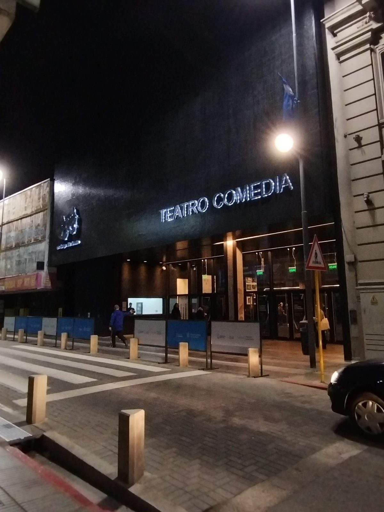

Córdoba · Danza
Pulso Urbano lleva la danza contemporánea a los barrios de Córdoba, del 27 al 29 de noviembre
La Agencia Córdoba Cultura presentó la undécima edición del festival, con entrada libre y gratuita. Habrá intervenciones en el Mercado Municipal de San Vicente, la Plaza Villa El Libertador y el Centro de Arte Contemporáneo Chateau, y dos funciones del Ballet Municipal en el Teatro Comedia.

Desde el viernes 27 hasta el domingo 29 de noviembre, la danza contemporánea volverá a ocupar lugares de tránsito cotidiano en la ciudad de Córdoba. La Agencia Córdoba Cultura, a través del Área de Danza Contemporánea, presentó la undécima edición de Pulso Urbano, Festival de Danza Contemporánea en Paisajes Urbanos. Todas las actividades serán con entrada libre y gratuita, según los comunicados del organismo.
El lanzamiento se realizó sobre la peatonal, frente al Museo de las Mujeres, con la participación del presidente de la Agencia, Marcelo Rodio; de Walter Cammertoni, director del Área de Danza Contemporánea y del festival; y de bailarines y referentes de las compañías participantes. El organismo publicó ese anuncio el 18 de noviembre.
La edición está organizada en torno a un eje conceptual: la pausa y la acción. En un comunicado del 16 de noviembre, la Agencia describió la pausa como la posibilidad de contemplar en medio del ritmo de la ciudad, y la acción como la potencia del movimiento. El festival, escribió el organismo, busca poner en diálogo la arquitectura —“una de las artes más perdurables”— con la danza, “acaso una de las más efímeras”.
Rodio dijo en esa presentación: “Este año queremos llevar Pulso Urbano a los barrios de Córdoba, donde hay muchas capacidades y elencos muy importantes que merecen tener la posibilidad de mostrar su trabajo y encontrarse con el público”. Cammertoni, por su parte, adelantó “una propuesta inaugural muy especial, que fusionará la danza clásica con la danza callejera”.
Tres jornadas y tres escenarios abiertos
El viernes 27, a las 18, el festival abre en el barrio San Vicente, en el CPC N.º 12 – Centro Cultural Miguel Iriarte, con una intervención en el Mercado Municipal, en San Jerónimo 2850. El sábado 28, también a las 18, las presentaciones se trasladan a la Plaza Villa El Libertador, en avenida de Mayo 1300-1348. El domingo 29, a las 18, el cierre al aire libre será en el Centro de Arte Contemporáneo Chateau (CAC), en avenida Cárcano s/n, Parque del Chateau.
Además de las compañías independientes seleccionadas por convocatoria, la programación incluirá al Seminario de Danzas Clásicas Nora Irinova, del Teatro del Libertador General San Martín, y a academias de los barrios que reciben al festival: VD Dance, de San Vicente; Vivir es Danza, de Villa El Libertador; y Studio 54, en el CAC.
A esas intervenciones se suman dos funciones de sala. El Ballet Municipal de Córdoba presentará Che Memé – Siempre yo el sábado 28 y el domingo 29 de noviembre, a las 20, en el Teatro Municipal Comedia. La Agencia no publicó una sinopsis de la obra ni aclaró, en esos comunicados, un régimen de entrada distinto para esa sala.
Cuatro obras elegidas por concurso
El 29 de octubre, la Agencia oficializó los cuatro proyectos de danza contemporánea independiente que participarán como titulares. Un jurado integrado por Laura Fonseca, Mariana Massera y Facundo Cornejo los eligió por unanimidad, entre 14 postulaciones admitidas.
Las obras son Algunos relatos, de Laila Gelerstein; Cosas que pasan, de Piva Pérez Compañía de Danza, con María Paula Terreno como responsable; Antediluvianas, de Preludio Plataforma de Creación, con Talma Salem de Oliveira como responsable; e Instrucciones para no hacer nada, del grupo De la nada, con Constanza Anabella Benito como responsable. Cada una tendrá dos funciones. Como suplentes quedaron Fluctúa, de Devagar, y Coraje de frente, de Danzando Ando.
La convocatoria, abierta el 7 de octubre y cerrada el 19 de ese mes, estuvo dirigida a creadoras y creadores con residencia en la provincia, mayores de 18 años. Las bases pedían obras inéditas, de 12 a 15 minutos, con entre 4 y 10 intérpretes, sin escenografía ni utilería, y aptas para un espacio de unos 8 por 8 metros. Cada proyecto titular recibe 1.800.000 pesos en honorarios profesionales por las dos funciones. El festival provee el sonido; el traslado y los demás gastos quedan a cargo de cada grupo.
Formación, con inscripción ya cerrada
El festival también contempló cuatro capacitaciones abiertas y gratuitas, con cupos limitados. Según la convocatoria publicada el 6 de noviembre, las inscripciones cerraron el jueves 19 de noviembre.
Los talleres son Footwork y destrezas, a cargo de Matías Ligato, con recursos de la danza breaking aplicados a la improvisación; Cuerpos en otra escena, coordinado por Mariana Massera e integrantes de La Pendiente Compañía de Danza, sobre danza inmersiva en espacios no convencionales; Danza clásica y su aplicación a otras danzas, a cargo de Pablo Pereyra; y Entrenamiento físico-vocal y creación escénica, a cargo del Elenco Municipal de Danza Teatro.
A once años de llevar la danza contemporánea a la calle, el festival vuelve a pedirle a la ciudad que se detenga un momento. Al martes 24 de noviembre, la Agencia no había informado la grilla completa por obra y por horario en cada sede.
Fuente
Agencia Córdoba Cultura, comunicados “Ya llega Pulso Urbano 2026, XI Festival de Danza Contemporánea en Paisajes Urbanos” (16 de noviembre de 2026) · “Pulso Urbano 2026 presentó su nueva edición: danza contemporánea, arquitectura y espacio público” (18 de noviembre de 2026) · “Se seleccionaron los cuatro proyectos que participarán de Pulso Urbano 2026” (29 de octubre de 2026) · “Se abrió la convocatoria para participar del XI Festival Pulso Urbano 2026” (7 de octubre de 2026) · “Pulso Urbano 2026: se abrieron las inscripciones para los talleres de capacitación” (6 de noviembre de 2026)